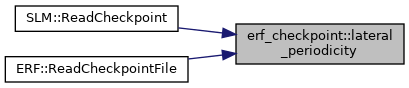
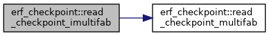
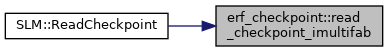
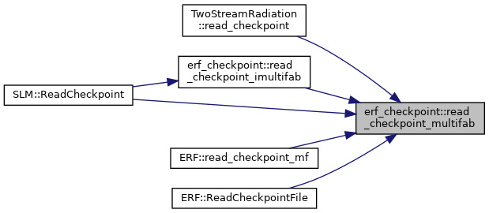

- Generated by
 1.9.1
1.9.1
|
ERF
Energy Research and Forecasting: An Atmospheric Modeling Code
|
Functions | |
| amrex::Periodicity | lateral_periodicity (const amrex::Geometry &geom) |
| void | read_checkpoint_multifab (amrex::MultiFab &dst, const std::string &mf_name, int scomp, int dcomp, int ncomp, const amrex::IntVect &dst_ghosts, bool src_ghosts, const amrex::Periodicity &period) |
| void | read_checkpoint_imultifab (amrex::iMultiFab &dst, const amrex::BoxArray &ba, const amrex::DistributionMapping &dm, const std::string &mf_name, const amrex::Periodicity &period) |
|
inline |
The periodicity of geom in x and y only. For planar fields, and for the terrain heights, which are not periodic in z even when the domain is: in a domain periodic in z, the top node of a column is the image of the bottom one but its height is not.
Referenced by SLM::ReadCheckpoint(), and ERF::ReadCheckpointFile().

|
inline |
As read_checkpoint_multifab, for an integer field the checkpoint stores as a MultiFab, valid cells only. dst is (re)defined on ba/dm, which are the grids the run uses.
Referenced by SLM::ReadCheckpoint().


|
inline |
Read one checkpoint MultiFab and deposit it into dst, which may live on different grids.
The source is read into an undefined MultiFab, which VisMF::Read then defines on the BoxArray recorded in the file, so no caller needs to know the checkpoint's grids – which is what lets a restart land a component's state on level-0 grids that moved (issue 4225).
Only the VALID cells of the source are offered by default: a file's ghost cells are not guaranteed to agree with its valid data, and ParallelCopy intersects the grown source with the grown destination without any ordering guarantee between overlapping sources, so offering them can land stale values in valid cells. Pass src_ghosts = true for a field whose halo the checkpoint carries and whose ordinary restart has always restored it; the valid cells are then laid over the top in a second pass, so they win wherever they reach.
| [in,out] | dst | destination, on the grids the run uses |
| [in] | mf_name | the checkpoint MultiFab, as for VisMF::Read |
| [in] | scomp | first component of the source to read |
| [in] | dcomp | first component of dst to fill |
| [in] | ncomp | number of components |
| [in] | dst_ghosts | ghost cells of dst to fill (capped at what dst holds) |
| [in] | src_ghosts | offer the file's ghost cells as well as its valid cells |
| [in] | period | periodicity of the domain dst lives in |
Referenced by TwoStreamRadiation::read_checkpoint(), read_checkpoint_imultifab(), ERF::read_checkpoint_mf(), SLM::ReadCheckpoint(), and ERF::ReadCheckpointFile().
